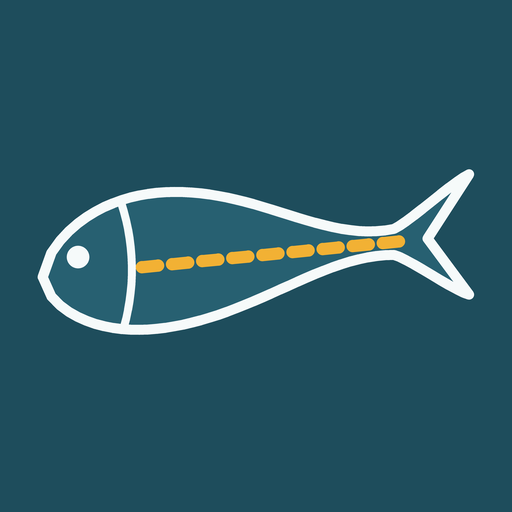

Oroshi
Hands-free fish prep, step by step
A step-by-step guide that sits next to your cutting board. Pick the fish and Oroshi shows how to break it down, one clear diagram at a time. Your hands are wet and smell of fish, so just say "next" to move on.
Search for "Oroshi" on the App Store.
Features
- Voice control — Say "next", "back" or "again". Recognition runs entirely on your iPhone; nothing is recorded or sent.
- Fish by fish — 17 fish and techniques, from horse mackerel to flounder, squid, octopus and sashimi slicing. Diagrams show where the blade goes and which way to pull.
- Safety stops — A short note appears before the steps that matter: checking for parasites, spiny fins, squid ink.
- Left-handed mode — Mirrors every diagram.
Pricing
Horse mackerel, mackerel and sardine are free forever. Unlock everything else with a one-time purchase. No ads, no subscription.